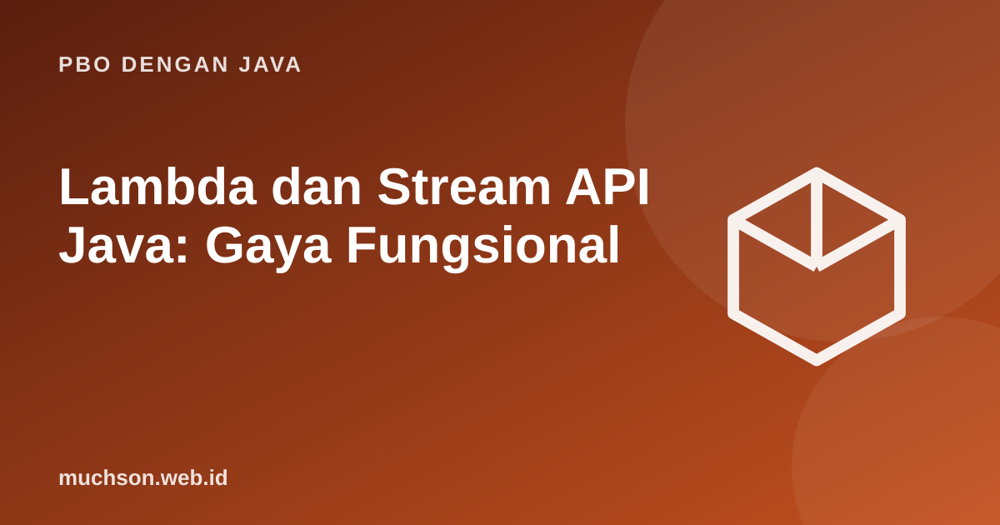

Beranda › Artikel › PBO dengan Java
PBO dengan JavaLambda dan Stream API Java: Gaya Fungsional
Sejak Java 8, Java dapat mengekspresikan perilaku sebagai nilai (lambda) dan memproses koleksi dengan alur deklaratif (Stream). Hasilnya kode yang menyatakan apa yang diinginkan, bukan bagaimana mengulanginya langkah demi langkah.
Sebaiknya sudah paham: interface, collections, generics dasar

Setelah membaca dan mencoba materi ini, Anda mampu:
- menulis lambda dan method reference
- mengenali functional interface standar (Predicate, Function, Consumer, Supplier)
- membangun pipeline stream: filter, map, sorted, limit
- memakai terminal operation: collect, reduce, count, anyMatch
- mengelompokkan data dengan Collectors.groupingBy dan menilai kapan stream tepat dipakai
Lambda: fungsi sebagai nilai
Lambda adalah implementasi ringkas dari functional interface, yaitu interface dengan satu method abstrak.
import java.util.*;
import java.util.function.*;
public class Main {
public static void main(String[] args) {
// cara lama: kelas anonim
Comparator<String> lama = new Comparator<>() {
public int compare(String a, String b) { return a.length() - b.length(); }
};
// lambda
Comparator<String> baru = (a, b) -> a.length() - b.length();
// method reference
Comparator<String> ref = Comparator.comparingInt(String::length);
List<String> kata = new ArrayList<>(List.of("semangka", "apel", "kiwi", "durian"));
kata.sort(baru);
System.out.println(kata);
Predicate<String> panjang = s -> s.length() > 4;
Function<String, Integer> hitung = String::length;
Consumer<String> cetak = s -> System.out.println("-> " + s);
Supplier<String> pembuat = () -> "dibuat saat dibutuhkan";
BiFunction<Integer, Integer, Integer> tambah = (a, b) -> a + b;
System.out.println(panjang.test("durian") + " " + hitung.apply("kiwi") + " " + tambah.apply(2, 3));
cetak.accept(pembuat.get());
}
}[apel, kiwi, durian, semangka]
true 4 5
-> dibuat saat dibutuhkan
| Interface | Method | Makna | Contoh lambda |
|---|---|---|---|
| Predicate | boolean test(T) | Uji kondisi | s -> s.isEmpty() |
| Function | R apply(T) | Ubah T menjadi R | s -> s.length() |
| Consumer | void accept(T) | Pakai nilai (efek samping) | s -> System.out.println(s) |
| Supplier | T get() | Hasilkan nilai | () -> new ArrayList<>() |
| Comparator | int compare(T,T) | Bandingkan dua nilai | (a,b) -> a - b |
Stream: pipeline tiga tahap
import java.util.*;
import java.util.stream.*;
record Mahasiswa(String nama, String jurusan, double ipk) { }
public class Main {
public static void main(String[] args) {
List<Mahasiswa> data = List.of(
new Mahasiswa("Ani", "TI", 3.8), new Mahasiswa("Budi", "SI", 3.1),
new Mahasiswa("Citra", "TI", 3.5), new Mahasiswa("Dewi", "SI", 3.9),
new Mahasiswa("Eko", "TI", 2.9));
List<String> berprestasi = data.stream()
.filter(m -> m.ipk() >= 3.5)
.sorted(Comparator.comparingDouble(Mahasiswa::ipk).reversed())
.map(Mahasiswa::nama)
.collect(Collectors.toList());
System.out.println(berprestasi);
double rata = data.stream().mapToDouble(Mahasiswa::ipk).average().orElse(0);
System.out.printf("rata-rata %.2f%n", rata);
System.out.println(data.stream().anyMatch(m -> m.ipk() < 3.0));
System.out.println(data.stream().map(Mahasiswa::jurusan).distinct().count());
Map<String, List<String>> perJurusan = data.stream()
.collect(Collectors.groupingBy(Mahasiswa::jurusan, TreeMap::new,
Collectors.mapping(Mahasiswa::nama, Collectors.toList())));
System.out.println(perJurusan);
Map<String, Double> rataPerJurusan = data.stream()
.collect(Collectors.groupingBy(Mahasiswa::jurusan, TreeMap::new, Collectors.averagingDouble(Mahasiswa::ipk)));
rataPerJurusan.forEach((j, r) -> System.out.printf("%s: %.2f%n", j, r));
int jumlahKuadrat = IntStream.rangeClosed(1, 5).map(x -> x * x).sum();
System.out.println(jumlahKuadrat);
System.out.println(Stream.of(1, 2, 3, 4).reduce(0, Integer::sum));
}
}[Dewi, Ani, Citra]
rata-rata 3.44
true
2
{SI=[Budi, Dewi], TI=[Ani, Citra, Eko]}
SI: 3.50
TI: 3.40
55
10
Malas dan satu kali pakai
import java.util.stream.*;
public class Main {
public static void main(String[] args) {
Stream<Integer> s = Stream.of(1, 2, 3, 4, 5, 6)
.peek(x -> System.out.println("filter melihat " + x))
.filter(x -> x % 2 == 0)
.peek(x -> System.out.println(" lolos " + x));
System.out.println("pipeline dibuat, belum ada yang berjalan");
System.out.println("hasil: " + s.limit(2).collect(Collectors.toList())); // berhenti setelah dua lolos
try { s.count(); }
catch (IllegalStateException e) { System.out.println("stream hanya dapat dipakai sekali"); }
}
}pipeline dibuat, belum ada yang berjalan
filter melihat 1
filter melihat 2
lolos 2
filter melihat 3
filter melihat 4
lolos 4
hasil: [2, 4]
stream hanya dapat dipakai sekali
Lambda tidak boleh mengubah variabel lokal luar (harus efektif final). Hindari efek samping di dalam map/filter; gunakan operasi terminal seperti collect untuk membentuk hasil. parallelStream() bukan jalan pintas cepat: ia membantu hanya untuk pekerjaan CPU yang besar dan bebas efek samping.
1. Dari list angka 1..20, ambil kuadrat dari yang genap dan kumpulkan ke List.
IntStream.rangeClosed(1,20).filter(x -> x % 2 == 0).map(x -> x*x).boxed().collect(Collectors.toList())2. Hitung jumlah kata yang diawali huruf "a" dari List.
kata.stream().filter(s -> s.startsWith("a")).count()3. Mengapa variabel lokal yang dipakai lambda harus efektif final?
4. Apa beda map dan flatMap?
- Lambda mengimplementasikan functional interface; method reference menyingkatnya.
- Stream: sumber → operasi antara (malas) → operasi terminal.
- Collectors.groupingBy untuk pengelompokan dan agregasi.
- Gunakan stream untuk transformasi data, for biasa untuk logika rumit.
Tanya jawab
Apakah stream lebih cepat dari for?
Apa itu Optional?
Bagaimana men-debug stream?
Referensi
- Oracle: Lambda Expressions (Java Tutorials)
- Oracle: Aggregate Operations (Streams)
- Java SE API: java.util.stream
- Joshua Bloch, Effective Java (edisi ke-3, Addison-Wesley, 2018)